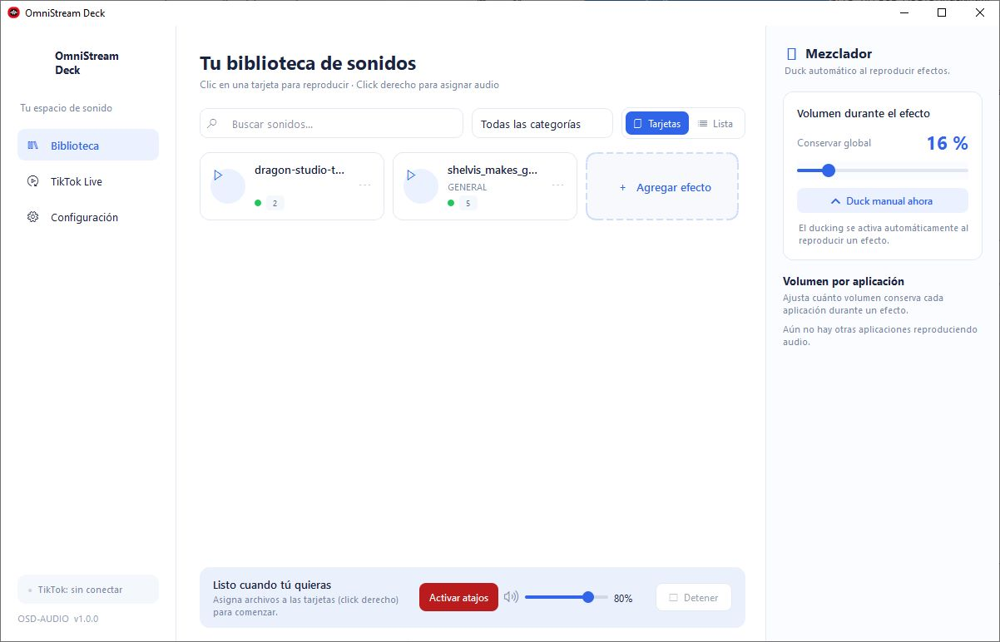
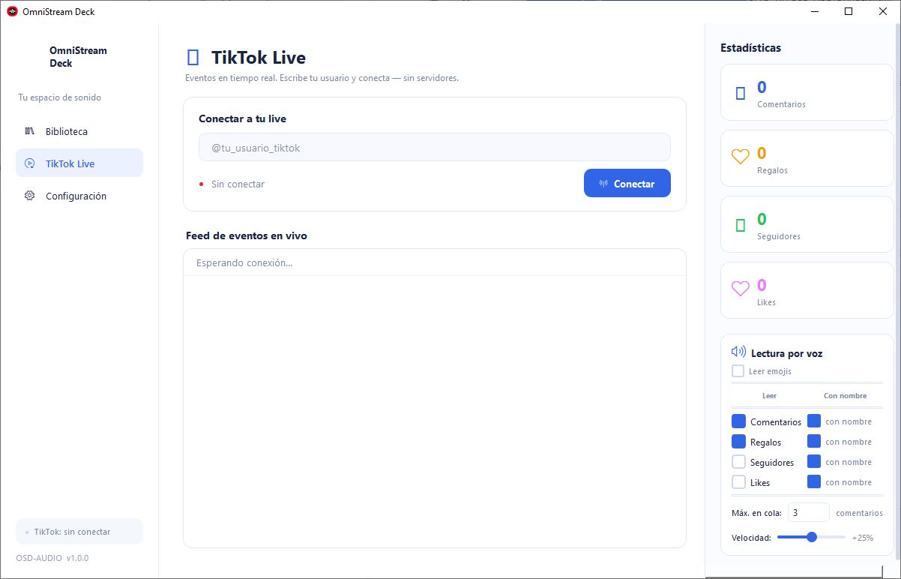

Universidad Nacional de San Agustín de Arequipa
OmniStream
Deck
Efectos de sonido, control de volumen por aplicación y eventos de TikTok LIVE.
C++17Qt 6WindowsOmniStream Deck en ejecución

Tecnología de Objetos
Temas aplicados.
- C++ y Qt
- Interfaz y controles.
- CMake y Git
- Compilación y versiones.
- POO y encapsulación
- Audio, atajos y TikTok.
- Herencia y polimorfismo
- Canales de audio.
- Punteros inteligentes
- Gestión de componentes.
- Lambdas
- Botones y atajos.
- Templates y colecciones
- Cola de sonidos.
- Hilos y mutex
- Procesamiento de la cola.
- Persistencia
- Biblioteca y ajustes.
- Excepciones
- Cierre del trabajador.
- Observer
- Eventos de reproducción.
- Testing
- Pruebas de audio y cola.
- MVC
- Interfaz y lógica.
La interfaz en uso
Una tarjeta.
Un sonido.
Cada efecto conserva su archivo, nombre, categoría, color, volumen y atajo.
Dos formas de dispararlo
Clic en la tarjeta o combinación de teclas global.
Control de los atajos
El botón inferior alterna entre Activar atajos y Pausar atajos.
Datos persistentes
SQLite guarda la biblioteca. Los archivos de audio se mantienen en su ubicación.
Del gesto al altavoz
Una solicitud atraviesa
cuatro componentes.
Interfaz
MainWindow recibe el clic o el atajo y crea AudioRequest.
Cola
ThreadSafeQueue protege el intercambio entre productor y consumidor.
Mezclador
AudioMixer procesa la solicitud en un hilo trabajador.
Reproductor
PriorityChannel reproduce el archivo mediante Qt Multimedia.
Hilo de la interfaz
Atiende controles, eventos de Qt y llamadas encoladas al reproductor.
Hilo trabajador
Espera solicitudes y despacha la reproducción con Qt::QueuedConnection.
Organización modular con separación parcial de vista y controlador. MainWindow concentra construcción de interfaz, coordinación y acceso a datos.
Implementación / método de reproducción
Así comienza un efecto.
void PriorityChannel::playSlot(const QString& filePath) {
if (filePath.isEmpty()) return;
audioOutput_->setVolume(static_cast<float>(volume_));
player_->setSource(QUrl::fromLocalFile(filePath));
player_->play();
}1. Validar
Una ruta vacía termina la operación.
2. Preparar
Asigna volumen y archivo local.
3. Reproducir
QMediaPlayer inicia la reproducción.
src/core/PriorityChannel.cpp · líneas 37–42. AudioChannel define el contrato abstracto; PriorityChannel y BackgroundChannel implementan sus operaciones con override.
Concurrencia y templates
Una cola coordina los hilos.
T waitAndPop() {
std::unique_lock<std::mutex> lock(mutex_);
cv_.wait(lock, [this]{ return !queue_.empty() || stopped_; });
if (stopped_ && queue_.empty()) throw std::runtime_error("Queue stopped");
T val = std::move(queue_.front());
queue_.pop();
return val;
}mutex
Protege el acceso a la cola.
condition_variable
Espera una solicitud o la señal de cierre.
template<typename T>
Reutiliza la estructura con AudioRequest.
include/utils/ThreadSafeQueue.h · líneas 25–32. std::thread ejecuta AudioMixer::processQueue; el destructor detiene la espera y usa join().
Dar espacio al efecto
Conservar una parte.
Restaurar al terminar.
Cada aplicación usa el porcentaje global o un valor personalizado. Windows Core Audio permite leer y cambiar el volumen de sus sesiones.
const int overridePercent = applicationPercent(session.applicationKey);
const int percent = overridePercent < 0 ? globalPercent_ : overridePercent;
const float target = original * percent / 100.0f;ApplicationDucking.cpp · líneas 134–136. Cálculo del volumen que conserva cada aplicación.
Prueba la lógica del mezclador
Demostración visual. Una aplicación parte de un volumen del 80 %.
80 % × 25 % = 20 % durante el efecto.
Eventos y comunicación entre procesos
De un comentario
a una voz.
TikTokLive recibe eventos en Python. QProcess entrega cada línea JSON a la aplicación.
Se pueden activar comentarios, regalos, seguidores y likes. La voz tiene su propia cola y reproductor.

Guardar preferencias y liberar recursos
Guardar ajustes y cerrar la sesión.
void MainWindow::saveDbSetting(const QString& key, const QString& value) {
if (!db_.isOpen()) return;
QSqlQuery q(db_);
q.prepare("INSERT OR REPLACE INTO settings (key, value) VALUES (?, ?)");
q.addBindValue(key); q.addBindValue(value);
q.exec();
}SQLite
Guarda tarjetas y opciones de lectura con consultas parametrizadas.
QSettings
Conserva porcentajes y el estado de los atajos.
Cierre confirmado
Detiene audio y voz, desconecta TikTok, restaura volúmenes y libera atajos.
src/gui/MainWindow.cpp · líneas 106–112. Las señales y slots conectan las acciones de la interfaz con la lógica de los componentes.
Proyecto en funcionamiento
Un recorrido completo
para la demostración.
Crear
Agregar una tarjeta y asignar un audio corto.
Configurar
Elegir atajo y porcentaje por aplicación.
Escuchar
Disparar el efecto y comprobar la restauración.
Cerrar
Confirmar la salida y la liberación de recursos.
Código del proyecto y descargas en github.com/ShSecurity/OSD-AUDIO